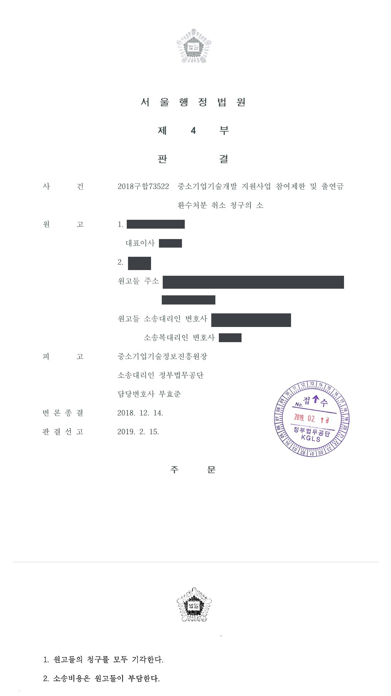

국가연구개발사업 참여제한 및 출연금 환수처분 취소소송
서울행정법원 2018구합73522 · 담당변호사 부효준
판결문

사건의 요지
창업성장기술개발사업 과제의 최종보고서를 기한 안에 제출하지 않은 것을 '연구부정행위'로 보아 한 3년 참여제한·출연금 환수처분과 그 정산금 미납을 이유로 한 2년 참여제한·환수처분에 관하여, 최종보고서 미제출을 연구부정행위로 규정한 시행령이 위임입법의 한계를 벗어났는지와 과제책임자의 일탈을 이유로 회사가 책임을 면할 수 있는지가 다투어진 사건입니다.
사건의 주요 내용
원고 회사는 친환경·청정에너지 기술을 연구개발하는 창업 중소기업으로, 2015년도 창업성장기술개발사업 '창업과제'에 플라즈마·촉매 방식의 공기정화장치 개발 과제로 선정되어 2015년 10월 전문기관과 기술개발기간 1년(2015년 10월~2016년 10월), 정부출연금 1억 4,100만 원의 중소기업기술개발사업 협약을 체결하였습니다. 과제책임자는 원고 회사의 연구소장이었고, 원고 회사의 대표이사도 원고로 참여하였습니다.
협약상 원고 회사는 사업 종료일부터 2개월 안에 최종보고서를 제출하여야 했지만 2016년 12월의 제출기한까지 제출하지 않았고, 전문기관은 2017년 6월 특별평가위원회를 거쳐 기술개발이 완료되었다고 볼 수 없다는 이유로 과제를 '중단'으로 판정하였습니다. 관리기관은 2017년 10월 사업비 집행내역을 확인할 수 없다는 이유로 정산금 137,401,495원의 납부를 통보하였으나 원고 회사는 이를 납부하지 않았습니다.
전문기관은 2018년 5월 정당한 사유 없이 최종보고서를 제출하지 않았다는 이유(연구부정행위)로 원고 회사에 정산금 137,401,495원의 환수와 3년의 참여제한을, 대표이사와 과제책임자에게 각 3년의 참여제한을 하는 처분(제1처분)을 하였고, 2018년 6월에는 정당한 사유 없이 정산금을 납부하지 않았다는 이유로 원고 회사에 같은 금액의 환수와 2년의 참여제한을, 대표이사에게 2년의 참여제한을 하는 처분(제2처분)을 하였습니다. 원고 회사와 대표이사는 두 처분의 취소를 구하였습니다.
쟁점
- 정당한 사유 없는 최종보고서 미제출을 '연구부정행위'의 하나로 규정한 구 중소기업 기술혁신 촉진법 시행령 [별표 2]가 위임입법의 한계를 벗어난 것인지
- 과제책임자가 시스템 접속 정보를 독점하여 최종보고서 미제출 사실을 회사가 알지 못하였다는 사정이 주관기관인 회사와 대표이사의 책임을 면하게 하는지
- 최종보고서 미제출로 환수와 참여제한을 받은 뒤 정산금을 납부하지 않았다는 이유로 다시 환수와 참여제한을 한 것이 비례원칙에 어긋나는지
원고의 주장
- 구 중소기업 기술혁신 촉진법은 '연구개발 자료나 결과를 위조·변조하거나 표절하는 등의 연구부정행위'를 처분사유로 규정할 뿐인데 최종보고서 미제출은 상식적으로 연구부정행위에 속하지 않으므로, 이를 연구부정행위로 규정한 시행령 [별표 2]는 위임입법의 한계를 벗어난 것이고 이를 근거로 한 제1처분과 그 전제 위의 제2처분은 위법하다고 주장하였습니다.
- 과제책임자인 연구소장이 전문기관 시스템의 접속 아이디와 비밀번호를 독점하고 최종보고서 제출에 관한 사실을 원고들에게 알려주지 않았으므로 미제출과 정산금 미납의 책임이 원고들에게 있다고 보기 어렵고, 전문기관이 과제를 제대로 관리하였다면 이런 결과가 생기지 않았을 것이라고 주장하였습니다.
- 과제책임자는 3년의 참여제한 처분만 받은 점과 원고 회사가 과제를 성공적으로 개발한 점을 고려하면, 두 처분은 비례원칙에 반하여 위법하다고 주장하였습니다.
부효준 변호사의 주장
- 구 중소기업 기술혁신 촉진법은 연구부정행위의 모습을 위조·변조·표절로 한정하지 않고 '등'이라고 열어 두었고, 연구개발 결과가 극히 불량한지나 과제 수행을 포기하였는지는 최종보고서가 제출되어야 평가할 수 있으므로, 정당한 사유 없는 최종보고서 미제출을 연구부정행위의 하나로 정한 시행령 [별표 2] 제6항 나목은 법률의 위임 내용을 구체화한 것일 뿐 위임의 한계를 벗어나지 않았다고 반박하였습니다.
- 협약상 최종보고서 제출의무자는 원고 회사이고 원고 회사는 자신이 고용한 과제책임자를 관리·감독하며 보고서가 제대로 제출되었는지 확인할 의무가 있으므로, 과제책임자의 개인적 일탈이 있었더라도 그것은 회사 내부의 사정에 불과하다고 주장하였습니다. 또 두 처분은 시행령 [별표 2]의 기준 안에서 이루어졌고, 과제 수행과 지원금 수령의 주체인 원고 회사와 대표이사의 책임이 과제책임자보다 작다고 할 수 없다고 하였습니다.
- 원고들은 처음에 전문기관이 처분 당시의 법령을 잘못 적용하였다고도 주장하였으나, 전문기관이 실제로는 처분사유 발생 당시의 구법을 적용하였음이 확인되어 원고들도 이를 인정하였고 그 쟁점은 정리되었습니다.
법원의 판단
법원은 먼저 시행령 [별표 2] 제6항 나목이 위임입법의 한계를 벗어나지 않았다고 판단하였습니다. 정부출연금은 한정된 예산에서 지급되므로 사후 평가와 제재가 반드시 필요하고, 법률은 '위조·변조·표절하는 등'이라고 하여 연구부정행위의 모습을 한정하지 않았으며, 연구개발 결과가 극히 불량한지나 과제 수행을 포기하였는지는 최종보고서가 제출되어 평가가 가능할 것을 당연한 전제로 하므로, 정당한 사정 없는 최종보고서 미제출을 연구부정행위에 준하는 사정으로 보는 것이 마땅하다는 것입니다. 2017년 9월의 시행령 개정으로 유형별 규정 방식이 바뀌었어도 최종보고서 미제출이 제재 사유에서 빠졌다고 볼 수 없다고 덧붙였습니다.
처분사유에 관하여는, 협약상 최종보고서 제출의무자는 원고 회사이고 원고 회사는 과제책임자를 관리·감독하며 보고서 제출 여부를 확인할 의무가 있으므로, 미제출의 주된 원인이 과제책임자의 개인적 일탈이라 하더라도 이는 회사 내부의 사정에 불과하다고 보아 제1처분과 정산금 미납을 이유로 한 제2처분의 처분사유를 모두 인정하였습니다.
재량권에 관하여는, 두 처분이 시행령 [별표 2]가 정한 범위(최종보고서 미제출은 3년·전액, 정산금 미납은 2년·해당 금액) 안에서 이루어졌고, 과제 수행과 지원금 수령의 주체이자 관리·감독자인 원고 회사와 그 대표자의 책임이 고용된 과제책임자보다 작다고 할 수 없으며, 처분으로 달성하려는 공익이 원고들의 불이익보다 가볍다고 할 수 없다고 보아 원고들의 청구를 모두 받아들이지 않았습니다.
연구개발의 결과가 극히 불량한지 여부나 연구개발 과제의 수행을 포기하였는지 여부 등은 해당 과제의 연구결과물에 대한 최종보고서가 주관기관에 제출되어 이에 대한 평가가 가능할 것을 당연한 전제로 한다. 또한 이 사건 과제에 지급된 정부출연금은 용역에 따른 대가라기보다는 이 사건 협약에 따른 의무를 이행할 것을 조건으로 지급된 지원금의 성격을 가지는데, 연구ㆍ개발이라는 특성상 그 적정 수행 여부 판단이 쉽지 않으므로, 최종보고서 미제출을 참여제한 및 출연금 환수대상으로 규정하지 않는다면 정부출연금을 지원받고도 불성실하거나 부정하게 연구개발을 수행한 자에 대한 제재조치로서 참여제한 및 출연금환수를 할 수 있도록 하는 구 중소기업기술혁신법의 입법 취지가 몰각된다. 이에 비추어 최종보고서를 제출하지 못하는 데 정당한 사정이 없다면 이를 연구부정행위에 준하는 사정으로 보는 것이 마땅하다.
서울행정법원 2018구합73522 판결 이유 '3. 나. 처분사유의 존부 2) 나)' 부분
이 사건 협약에 따른 최종보고서 제출의무자는 원고 회사로, 원고 회사는 과제책임자를 관리ㆍ감독하고 이 사건 협약에 따른 최종보고서가 제대로 제출되었는지 여부를 확인할 의무가 있다. 설사 최종보고서 미제출의 주된 원인이 연구책임자의 개인적 일탈 때문이라도 이는 원고 회사의 내부적인 사정에 불과하다. 따라서 피고가 정당한 사유 없이 원고 회사가 최종보고서를 제출하지 않았다는 이유로 한 이 사건 제1처분 및 이에 따라 이루어진 이 사건 제1처분에 의한 정산금을 납부하지 않았다는 이유로 한 이 사건 제2처분은 그 처분사유가 인정된다.
서울행정법원 2018구합73522 판결 이유 '3. 나. 3)' 부분(과제책임자의 이름은 역할어로 바꾸어 적음)
원고 회사가 이 사건 과제 수행 및 지원금 수령의 주체이자 관리ㆍ감독자임을 고려하면, 원고 회사나 그 대표자인 원고의 책임이 원고 회사에 고용되어 과제를 수행한 과제책임자보다 더 작다고 할 수 없다. 앞서 본 구 중소기업기술혁신법에 따른 참여제한 및 출연금 환수 제도의 취지와 목적에 비추어, 이 사건 제1, 2처분으로 달성하고자 하는 공익목적이 이로 인하여 원고들이 입게 될 불이익보다 가볍다고 할 수 없다. 따라서 이 사건 처분이 비례의 원칙에 반하여 재량권을 일탈ㆍ남용하였다고 볼 수 없다.
서울행정법원 2018구합73522 판결 이유 '3. 다. 재량권 일탈·남용 여부 나)' 부분(사람 이름은 역할어로 바꾸어 적음)
※ 판결 이유 가운데 이 사건의 판단 기준이 된 부분을 그대로 옮긴 것으로, 당사자 이름 등은 가렸습니다.
이 사건이 보여 주는 것
최종보고서를 기한 안에 내지 않는 것은 단순한 행정 절차의 지연이 아니라, 구 중소기업 기술혁신 촉진법 체계에서 '연구부정행위'에 준하는 사정으로 취급되어 3년의 참여제한과 출연금 전액 환수의 대상이 됩니다. 과제가 실제로 성공적으로 수행되었더라도 보고서가 없으면 결과를 평가할 길이 없다는 것이 법원의 시각입니다.
전문기관 종합관리시스템의 접속 정보를 과제책임자가 혼자 관리하다가 보고서가 제출되지 않았더라도 그 책임은 주관기관인 회사와 대표이사에게 돌아가고, 통보받은 정산금을 납부하지 않으면 그 자체가 다시 참여제한과 환수의 사유가 되어 제재가 겹겹이 쌓일 수 있습니다. 주관기관은 과제책임자의 보고 업무를 직접 확인하고, 정산금 통보를 다투는 경우에도 납부 문제를 따로 관리할 필요가 있습니다.
관련 법령구 중소기업 기술혁신 촉진법 제31조 제1항 제6호·제9호, 제4항, 제32조 제1항 · 구 중소기업 기술혁신 촉진법 시행령 제20조 제1항·제2항, 제21조 제1항, [별표 2] 제6항 나목·제9항 나목 · 중소기업 기술혁신 촉진법 시행령(2017. 9. 19. 개정) 제20조 제1항 제1호, [별표 2] · 중소기업 기술혁신 촉진법 제29조(권한의 위탁), 같은 법 시행령 제19조 제1항 · 구 중소기업기술개발 지원사업 운영요령 제30조, [별표 3]
관련 단어참여제한출연금 환수창업성장기술개발사업최종보고서 미제출연구부정행위위임입법의 한계시행령 별표 2정산금 미납과제책임자대표이사 참여제한비례원칙처분 적법
비슷한 처분을 받으셨다면
국가연구개발 제재처분은 사전통지를 받은 날부터 20일 이내에 재검토 요청 의견을 내고, 처분이 있음을 안 날부터 90일 이내에 취소소송을 제기해야 합니다. 처분서나 사전통지서를 받은 날짜부터 확인해 드립니다.